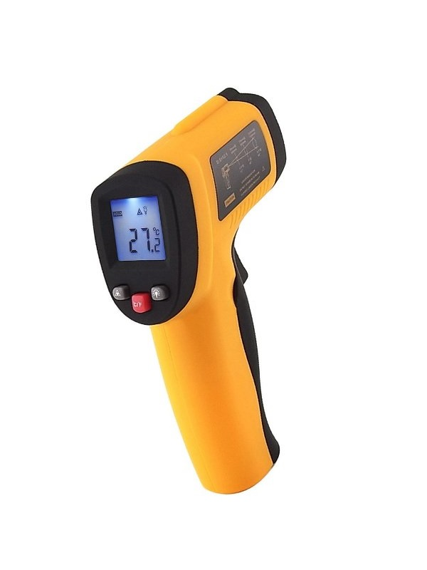
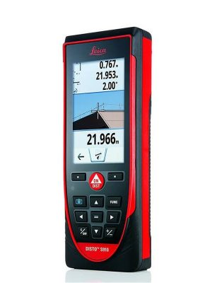

PROFESIONÁLNA MERACIA TECHNIKA
Presné meranie
v každom detaile.
Meracie a laboratórne prístroje pre stavbu, priemysel aj prácu v teréne. S odborným poradenstvom a servisom v Bratislave.

LASEROVÝ DIAĽKOMERLeica DISTO S910
Predajňa v BratislaveOdborárska 50
Servis a kalibráciaZáručný aj pozáručný servis
Požičovňa prístrojovPrenájom vybraného sortimentu
SORTIMENT
Nakupujte podľa kategórie
VÝBER Z KATALÓGU
Akciové ponuky
SLUŽBY A PODPORA
Starostlivosť o meraciu techniku
KONTAKT
Potrebujete poradiť s výberom?
Ozvite sa nám alebo nás navštívte v predajni v Bratislave.
Napíšte námPracovné dni 8:00 – 16:30Prestávka 11:00 – 11:30
+421 915 770 303pristroje@pristroje.sk